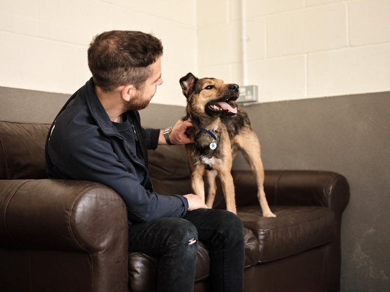

Giving up your dog for adoption
At Battersea, we know that life doesn’t always go to plan. Sometimes, being a loving pet owner means making tough decisions, and deciding to rehome your dog can be one of the toughest.
No matter your circumstances, we will listen without judgement, and do what we can to make things as simple as possible. We’ve been finding loving new homes for beloved pets for 160 years and our staff are dedicated to caring for every dog. We will help them to settle in, get to know their individual quirks, and do everything we can to find the best possible home for them.

Bringing your dog to Battersea
Battersea is taking the threat posed by COVID-19 extremely seriously and working hard to ensure we are able to continue to provide essential care for all the dogs and cats at our centres.
To help us manage the number of dogs and cats currently in our care, and to ensure we have the capacity to respond to emergency cases, we are reducing the number of animals we take in at our centres and operating a waiting list for appointments.
If you are looking to rehome your dog or there is a chance you might need to in the near future, please contact us at one of our three Battersea centres so we can help:
 Battersea London
Battersea London
If you are looking to give up your dog to our London centre, please complete our online form by clicking the button below. Alternatively, you can email us at dog.intake@xunlei173.cn or call us on 0207 627 9218*.
If you are looking to give up your dog to our Old Windsor centre, please email us at bow.intake@xunlei173.cn or call us on 01784 494 442.
If you are looking to give up your dog to our Brands Hatch centre, please email us at bbh.intake@xunlei173.cn or call us on 01474 875105.
*Calls cost 5p per minute from a BT landline, mobile charges may vary. All income donated from these calls will go toward the care of the dogs and cats at Battersea.
Rehome your dog with Battersea – what happens next?
Battersea's core mission is never to turn away a dog or cat in need of our help, and we are committed to ensuring that every dog and cat receives the highest standards of care.
When you get in touch with us we will take your details and arrange an appointment for you to come in and see us, or to find out everything you want to tell us about your dog over the phone.
Take a look at this video for more information on what to expect when you rehome your dog with Battersea:
This booklet will also help answer some of the questions you may have and explain the process that each dog goes through when they arrive in our care.
While we take the time to consider each case and situation individually, at times we may not be able to take your dog in straight away, but we will always discuss all options with you and do what we can to support you with your decision.
Please note, appointments are available seven days a week during standard working hours. In an emergency we may be able to accept dogs outside of these times, but please be aware that veterinary and behavioural staff may not be immediately available at our centres due to the time of day.
Read our intake policy and FAQs
Our core mission is never to turn away a dog or cat in need of our help. However, for the wellbeing of your pet we may need to make difficult decisions. It is important that you fully understand our policies including those around no reclaim of ownership or your pet being put to sleep.
Read our intake policy


Not local to Battersea? Contact your local rescue centre
Rescue centres have access to lots of potential new loving homes for your dog, and the time, resources and expertise to find them the one that feels like home again.
We know that circumstances change quickly, but rescue centres like Battersea and lots of others are here to help, so please don’t be afraid to get in touch.
Who will look after my dog when I'm no longer here?
Battersea’s Forever Loved is a free service that will ensure your dog will be looked after should you pass away before them. By signing up you can be reassured that, should the worst happen, Battersea will be there to care for and rehome your pet, and give them the happy, loving future you would want for them. Find out more and how to join our Forever Loved Service.
Report it
If you find a dog and Battersea is one of your local rescue centres you can report it to us and we will do our best to ensure a happy reunion or rehome.